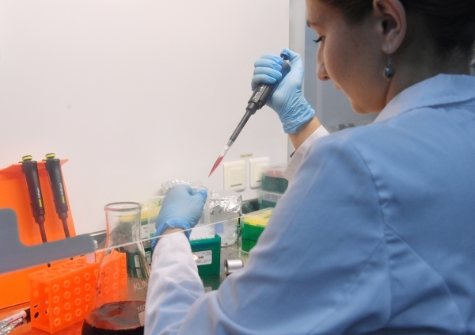

Откуда взялся COVID-19?Новые гипотезы, старые подозрения

Новая гипотеза происхождения коронавируса выдвинута научным сообществом, правда, она не отвечает на главные вопросы: мог ли COVID-19 иметь искусственную природу и почему мировая пандемия произошла именно в этом году.
Вирусолог Джонатан Латэм и биолог Эллисон Уилсон выдвинули новую гипотезу возникновения главной болезни этого года - коронавируса.По данным ученых, COVID-19 адаптировался к человеческому организму еще в 2012 году, когда китайские шахтеры массово заразились, убирая шахту от фекалий летучих мышей.
Как сообщает The Sun, тогда коронавирус приняли за атипичную пневмонию, однако после экспертизы анализов шахтеров в лаборатории Ухани было установлено, что они заразились именно коронавирусом.
Параллельно, учёные установили, что предок коронавируса появился еще 70 лет назад.По данным издания, Nature Microbiology, переносчиком могли быть летучие мыши, которые, по одной из версий, стали источником заражения и в наше время.
Тем не менее, новые открытия ученых не отвечают на основной вопрос: почему пандемия произошла именно в этом году?Да и версия об искусственном происхождении вируса также до конца не опровергнута.
Так, депутат Госдумы, доктор медицинских наук, врач-эпидемиолог Геннадий Онищенко заявил на пресс-конференции НСН, что нынешний вирус мог быть создан искусственно.
«Обсуждалась тема преднамеренности этого вируса.Да, китайцы над SARS работали, к тому же там находится природный очаг, был MERS, это тоже коронавирусная инфекция.В 2015 году вместе с Гарвардом китайцы искусственно этот вирус воспроизвели.Но у мира нет возможности контролировать США, а их лаборатории есть почти у всех бывших советских республиках, кроме Прибалтики.Коронавирус вполне подходит для биологических атак.Я считаю, что все это гибридные войны.И реальная обстановка не соответствует тому, что пишут.Налицо все признаки информационного террора », - предположил Онищенко.
Тему с искусственным происхождением коронавируса неоднократно поднимали американские СМИ, обвиняя в его распространении лабораторию в Ухани.Власти Китая категорически отвергают эти обвинения.
Несмотря на всю остроту дискуссии вокруг происхождения, в России подошли к проблеме более утилитарно - изобрели первую вакцину.Правда, к российской вакцине остаются вопросы, как у международной общественности, так и ученого сообщества.
При этом министр здравоохранения России Михаил Мурашко рассказал о высоком спросе из-за рубежа на новую российскую вакцину от коронавируса «Спутник V».В то же время в США российскую вакцину считают настолько недоработанной, что она «даже не вызвала серьезного интереса».
Главный внештатный специалист Минздрава России по терапии и общей практике Оксана Драпкина в эфире НСН заявила, что нет поводов не верить в качество российской вакцины от коронавируса.
«Не доверять качеству вакцины нет оснований», - заявила Драпкина.Она пояснила, что российская вакцина получена биотехнологическим путем, в ней не используется патогенный для человека вирус.Вакцина включает в себя белок, который активирует иммунитет.
Сомнения по поводу российской вакцины выразили и в ВОЗ, заявив о намерении ее проверить.Тем не менее, главный научный сотрудник НИЦ эпидемиологии и микробиологии имени Гамалеи Феликс Ершов в эфире НСН рассказал, что это абсолютно нормальная ситуация.
«Они высказывали сомнения по поводу того, что слишком быстро сделано, прошла ли она все этапы.Я думаю, это их право.Для этого и существует ВОЗ.Они хотят проверить все протоколы, это нормально.Обычно вакцины создаются и испытываются не меньше года, но ситуация такая, что это был социальный заказ человечества, препарат нужно было сделать очень срочно», - отметил Ершов.
Эффективность российской вакцины уже совсем скоро мы сможем проверить на себе.Споры же о происхождении коронавируса, скорее всего, еще долго не утихнут.Ведь это не только вопрос науки, но и политики.
Posted On: 2020-08-16T00:00:00
Posted By: Святослав Павлов
Content Date: 2020-08-16
Download Date: 2021-03-17
Document ID: L0C04983C